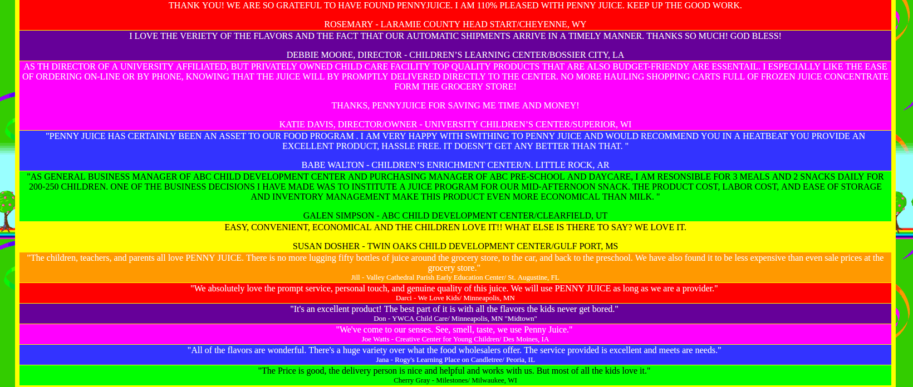
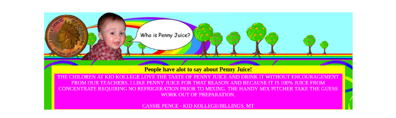

Nowadays, Internet has been a part in everybody’s life. People can easily find all kinds of information with just some simple clicks from anywhere, and information on the Internet is displayed on the websites. However, how do we create websites that have full accessibility and usability so that everyone can access them is a challenge. Developing websites is hard, and make it accessible and usable is even harder. But what is web accessibility and usability? Web accessibility means that the websites can be accessed by anyone including those with disabilities because everybody has the rights to see information on the Internet (Web Accessibility). Web usability means we should create websites that are ease to use so that we can have the best user experience (Web Usability).
Nike's site has a good layout, text are very clear and easy to read. There are appropriate headers which makes it easy to navigate between pages. Source: NikeThere are a lot of websites that have really good accessibility because they consider users’ experience when they develop their website. Nike is one of those. The good thing that I really like about it is that they have sticky navigation bar on the site so that the users can easily navigate on their website.
Sticky navigation bar (the navigation bar always sticks on top) makes it easy to navigates between pages. Source: NikeFurthermore, for every picture, Nike always does a really nice job including the descriptions for each of them which makes it easy for users to shop on their website even people with disabilities. Also, their font size and font color is consistent, this makes the texts look really nice and easy to read.
There are texts next to the picture to describe what the picture is about. Source: NikeThey also optimized the website so that it will work perfectly on any devices no matter what the device's widths are. This is really good because “mobile digital time in the US is now significantly higher at 51% compared to desktop (42%).” (Mobile Marketing Statistics). Therefore, lots of people will use their phones for shopping online too, and making the website to look good and perform well on mobile is a really smart and necessary move.
The site is fully responsive and available on large and small devices (took on iPhone 5). Source: NikeHowever, there are lots of websites failed to do that. Those websites lack of accessibility and usability which make the users have bad experience when they visit the website. The Penny Juice is one of these, and it is a bad website because it requires Flash Player to be installed which makes it not available on all platforms/devices.
The website requires FlashPlayer makes it not available on all platforms. Source: Penny JuicePennyJuice also has a bad layout. Also, the font, the font size, and font color are not consistent, and this makes it extremely hard to read. There are a lot of colors for the background of each paragraph which makes it messy and confusing to the users.
 The text and background are kind of messy. There are a lot of different colors and different font sizes which make it hard to read the text. Source: Penny JuiceFurthermore, there is no way to navigate back to the home page of the PennyJuice website, and the only way to go back is to click the "Prev" button of the browser. This is another factor that could create bad users' expericence.
 There is no way to navigate back to the previous page. The only way to go back is to click the prev button on the browser. Source: Penny JuiceLibertyVan is another example of a bad website. The site looks really messy and confusing to the users. The users would not know what it is about and where they should start with all off these inconsistences of font, font size, and font color as well as the overlapping of the components.
The layout, font, fontsize, font color are really messy and confusing. The texts overlap each other as well as the pictures. Source: LibertyVanWith all that being said, there are some changes that I should make to this very website so that it will improve the accessibility and usability. The first thing is that for every single pictures on my website, I should include ALT attribute to make sure that people with disabilities can understand what those pictures are about; I also include the title attribute in the images so that when the user hover their mouses over, it will show the title of those images. Secondly, I should make my website so that it can be easily navigated. With that said, I have changed my navigation bar to always “stick” to the top of the website so that the users still can easily navigate between the pages in my website even they scroll down really far down in a long post. Moreover, I should include a "Go to Top" button so that the users can easily go to the top with a single click instead of scrolling all the way up.
The sticky navigation bar makes it easy to navigate between pages. Source: Tin Vo's siteAlso, there are a lot of things to fixed those bad websites above. The first thing to do is to make the website Flash independent; there is no need for flash at all because the site is just displaying some static contents which can be easily created by simple HTML/CSS. Also, I would reduce the huge blank space on the homepage by centering the important contents (the trees and text) both vertically and horizontally. Reducing the amount of colors used as the background to make it less messy and easier for the reader to read. Texts and font size on the website are not consistent; some are all capital, and some are lowercase. Thus, I would change them all to lowercase (only capital the first letter or some important texts). Also, add a “go to top” button and a button to go back to the previous (home) page to make it easier to navigate between pages. For the LibertyVan site, I would change the layout as well as the font, fontsize, and font color so that it would be easier to read. I would also make these websites to look good on mobile devices because a lot of people use mobile nowadays.
In conclusion, there are a lot of things to consider when designing and developing a website. We have to make sure that our website look good and has full accessibility and usability so that it will be available to everybody. Also, there should be no need to install any third party software in order to see contents on the website, and we have to keep our site consistent and easy to navigate. With all that considered, we can create a website with best users' experience.